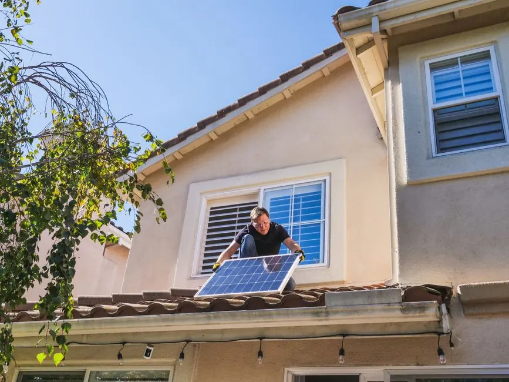

Residential Roofing in Euless
Residential roofing in Euless is essential for protecting homes from the Texas climate. With a variety of house types, homeowners prioritize quality and durability in roofing solutions.
- Roof inspections for homeowners — Regular roof inspections help Euless homeowners identify potential problems early and ensure their roofs are in good condition.
- Emergency roof repairs — Emergency roof repairs are crucial for homeowners facing sudden leaks or storm damage, allowing for quick restoration of safety.
- Roof replacements with quality materials — We offer roof replacements using top-quality materials, ensuring long-lasting protection and enhancing the home's value.
- Maintenance plans for longevity — Our maintenance plans help homeowners in Euless keep their roofs in optimal condition, preventing costly repairs down the line.